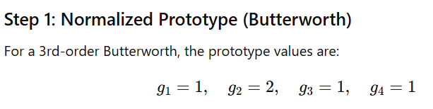
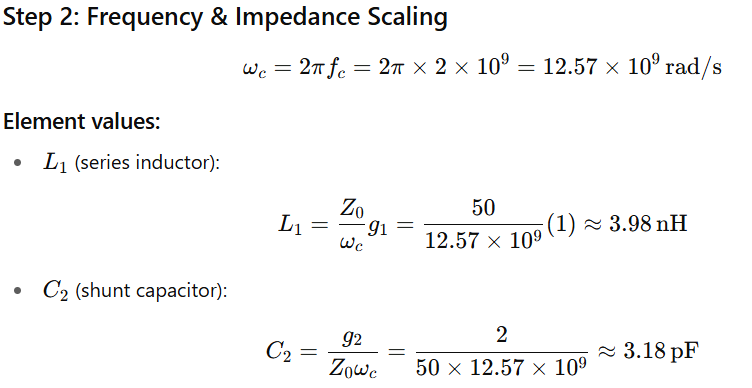
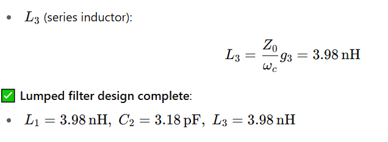
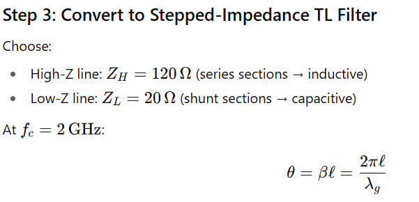
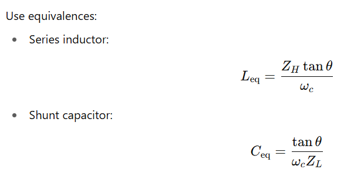
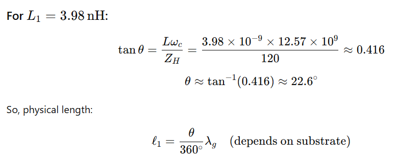
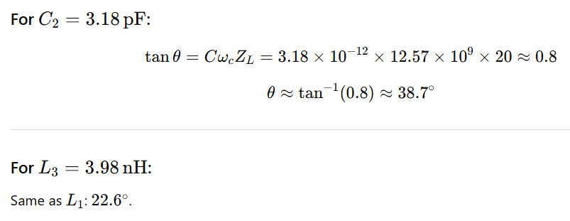

Answer:
Increasing order improves skirt steepness (better selectivity) but increases insertion loss, component count, size, and often worsens phase distortion. High order can also narrow usable instantaneous bandwidth in practical implementations.
Answer:
Group delay varies across the passband; non-uniform group delay causes signal dispersion and distortion (important for wideband/phase-sensitive signals). Filters with linear phase or constant group delay are preferred for pulse or digital RF signals.
Answer:
Lumped filters: use discrete L/C elements; compact at low frequencies but impractical at microwave where element parasitics dominate.
Stepped-impedance filters: use alternating high/low impedance transmission line sections that emulate series inductors and shunt capacitors — suitable for planar microwave implementation.
Answer:
  Answer:
   